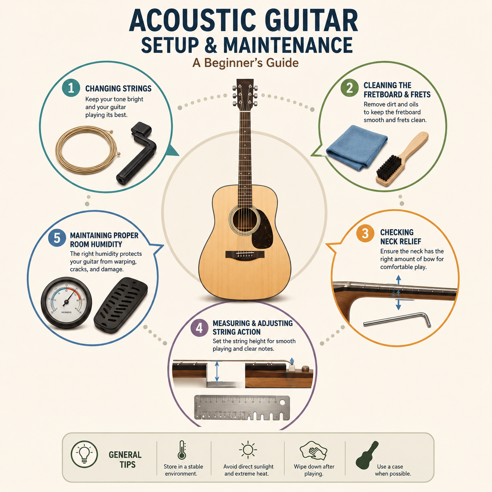
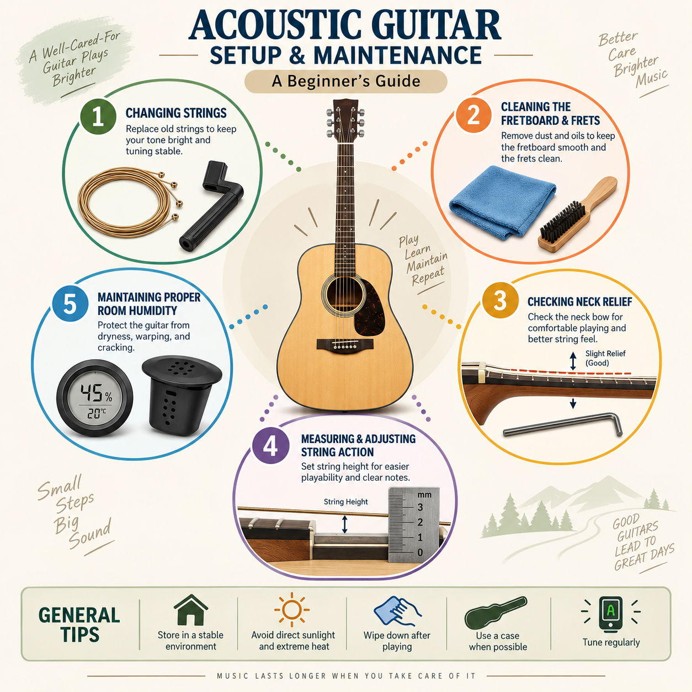

ACOUSTIC GUITAR CARE NEWSLETTER
Simple Maintenance that can make huge difference

Dear Fellow Guitarists,
If your acoustic guitar doesn’t sound or feel like it did, it could be a simple issue. String wear, a dirty fretboard, changes in neck relief, and/or uncomfortable string action can all impact the playability of a guitar. Some of the most common guitar repair issues can be learned and performed at home by the new player, provided they have the proper tools and are willing to work a little harder.
Start with strings and cleaning
Another simple maintenance routine is to keep the guitar clean and replace worn strings. Old strings may become dull, scratchy, and harder to tune. It’s also a good time to clean the fretboard, wipe down the body, and get rid of dirt around the frets when changing strings. The following small practices will help the guitar feel comfortable to play and easier to identify any issues early.
Check your Guitar’s Setup
A guitar with the wrong setup can make it more difficult to play. Neck relief relates to the height of the strings from the fretboard and the amount of effort required to press them down. String action is how high the strings are from the fretboard and how much effort is required to press them down. The action too high may make playing the guitar challenging. If it is too low, buzzing may occur. A simple measurement can be useful for a guitarist to know what is going on before they make a change. Certain adjustments and repairs should still be performed by a professional, particularly when a player is unsure of what he/she needs to adjust or repair.
Watch the Humidity
Since the acoustic guitar is a primarily made-of-wood instrument, humidity is another critical aspect to be considered when it comes to acoustic guitar care. Dry or humid conditions can have an impact on the wood and cause changes to occur in the guitar over time. A basic hygrometer can assist a guitarist to track the level of moisture in a room and proper storage can help to minimise damage to the guitar when it is not in use.
Use the Right Tools
Simple maintenance can be easier with a few simple tools. For many guitarists, a string winder, microfiber cloth, tuner, small ruler or action gauge, truss rod wrench, and humidity monitor will be helpful to have. For beginners, it is not necessary to purchase all the tools that are on offer. What each tool does and when to use it is more important.

Learn More
Visit the About Page to learn more about why I created this project and continue exploring the website for practical maintenance information and beginner-friendly resources.
Keep playing and keep your guitar well-conditioned,
Suman Pandey
Works Cited
OpenAI. Acoustic Guitar Setup and Maintenance Workspace. AI-generated image, 29 Aug. 2026. ChatGPT.
OpenAI. Acoustic Guitar Setup and Maintenance Workspace. AI-generated infographic, 09 Sep. 2026. ChatGPT.